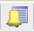
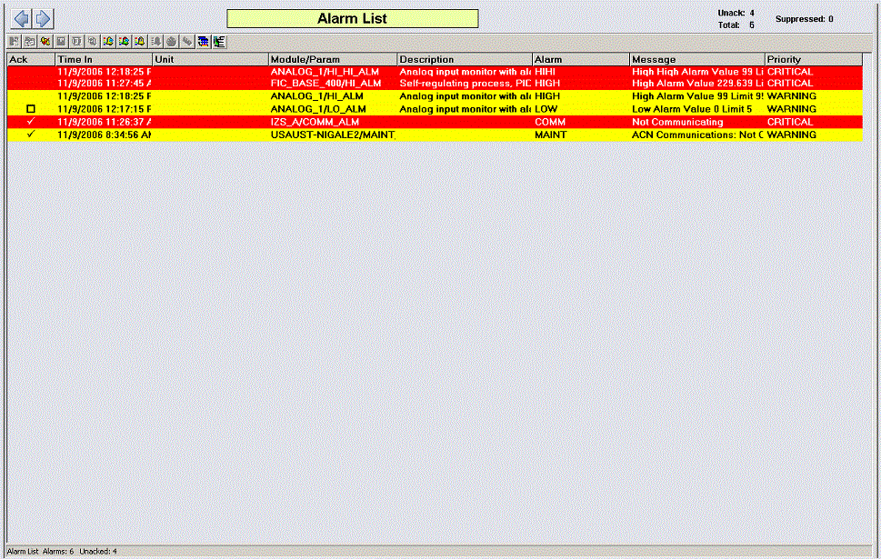

Responding to alarms from an alarm list
Ack - the acknowledged status.
Time In - the time at which the alarm went active.
Time Last - the time of the last state change.
Unit - the name of the unit or equipment module that owns the alarm or is in alarm.
Module/Parameter - the name of the module that contains the alarm and the active alarm.
Description - a description of the module.
Alarm - an abbreviation or acronym such as COS (Change of State) or CFN (Change from Normal) that appears when the alarm is active. The alarm word is a characteristic of the alarm type.
Message - a message associated with the alarm. The format of the alarm message is determined by the alarm type.
Priority - a word and color that indicates the importance of an event and the priority of an alarm to the operator.
To acknowledge an alarm from an alarm list, select the check box in the Ack column for that alarm. You can also open an alarm's module faceplate from the alarm's right-click context menu, and then acknowledge the alarm from the faceplate.
The Alarm List display also shows a summary of alarm information for the
current area. In the top right corner, you see the total number of active,
unacknowledged, and suppressed alarms (either shelved, out of service, or
both); in the bottom left corner, you see the total number of active and
unacknowledged alarms. You can also click the Browse button ( ) to open the Alarm Filter
display, from which you can filter alarms by area. To filter certain areas,
select the area or areas for which you want to see active alarms.
) to open the Alarm Filter
display, from which you can filter alarms by area. To filter certain areas,
select the area or areas for which you want to see active alarms.
To open the Alarm List display, click

If an alarm is active, unacknowledged, or suppressed when a controller switch-over occurs, the alarm is regenerated with a new Time Last value; the value of Time In remains the same.
The following image shows a sample of an Alarm List display:

Saving runtime alarm information
The Alarm List display can be configured to include the Export Alarm Summary to XML button, which provides a quick and easy way to generate a list of standing alarms based on the filter settings of an Alarm Summary. This information can then be used for shift reports or for identifying potential alarm issues that require attention. The export can be focused by Unit or by a general list of all alarms reporting to that workstation, but the information exported is limited to the filters currently in effect for the Alarm Summary.
To begin the export, click the Export Alarm Summary to XML button. A status box confirms the export is in progress and remains on the screen for a maximum of 10 seconds. The status box does not interrupt operation and you can click the Hide button to remove the popup immediately without affecting the alarm export.
All alarms that satisfy the alarm list's filter settings are exported to an XML file in the directory DeltaV\ProgramData\Emerson\ExportData\YYYYMMDD_HHmmss.xml. The exported XML files are given unique names in the form YYYYMMDD_timestamp.xml. A maximum of 50 export files with the system-provided name can be stored in this location. The oldest export files are removed as new exports are made. To save export files indefinitely, either rename them or move them to another directory.
To view and work with the exported files, open them in Microsoft Excel or another XML editor. When opened in an XML editor, the export file appears similar to how the alarm list appears in DeltaV Live.